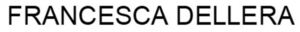

Trade Mark Journal No.2026/011 13 March 2026
WO0000001905017 (9,16,38,41)
Office of origin: Italy
Date of International Registration:5 November 2025
Date of designation in the UK:
5 November 2025

International priority date claimed: 19 May 2025
(Italy)
(302025000080590)
- Class 9
- Downloadable podcasts; downloadable image files; downloadable video files; data sets, recorded or downloadable; downloadable digital photos; electronic publications, downloadable; downloadable video recordings featuring music; downloadable musical sound recordings; photograph projection devices; interactive electronic publications; downloadable electronic publications in the nature of magazines; downloadable electronic publications available from databases or the Internet; weekly publications downloaded in electronic form from the Internet.
- Class 16
- Photographs [printed]; photo album; pictures in the nature of printed photographs; photographic prints; paper or cardboard supports for photographs; periodicals; professional magazines; specialized magazines; portraits; portraits in the nature of printed photographs; albums; stickers [stationery]; tickets; calendars; posters; newspapers; pictures; leaflets; printed publications; graphic reproductions; magazines [periodicals]; bookmarkers.
- Class 38
- Transmission of data, audio, video and multimedia files, including downloadable files and files streamed over a global computer network; provision of access services to electronic publications; providing access to Internet-based platforms for the exchange of digital photographs; electronic transmission of images and photographs via a global computer network; transmission of videos, movies, pictures, images, text, photos, games, user-generated content, audio content, and information via the Internet.
- Class 41
- Portrait photography; portrait painting; modelling for artists; editorial consultation; publishing services; organization of exhibitions for cultural purposes; organization and conducting of exhibitions for entertainment purposes; organization and implementation of seminars, training workshops, conferences, talks, distance learning courses, and exhibitions for cultural purposes; cultural activities; conducting of cultural events; organization of exhibitions for cultural or educational purposes; cultural, educational or entertainment services provided by art galleries; online provision of information relating to education, training, entertainment, and sporting and cultural activities; providing online videos, not downloadable; providing online virtual guided tours; providing online images, not downloadable; rental of artwork; organization of fashion shows for entertainment purposes; photographic reporting; photography; publication of multimedia material online; online publication of electronic newspapers; online digital publishing services; online publication of electronic books and journals; providing online electronic publications, not downloadable; publication of online reviews in the field of entertainment.
IRENE CERVELLERA
Representative: Bird & Bird Società tra Avvocati s.r.l., Via Porlezza, 12, I-20123 Milan, ITALY